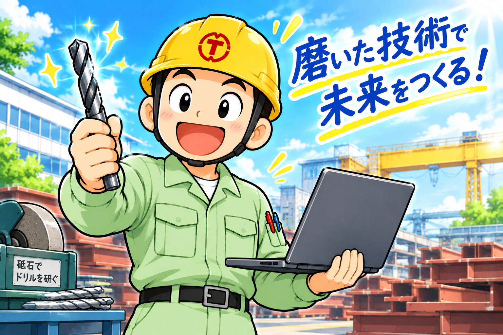
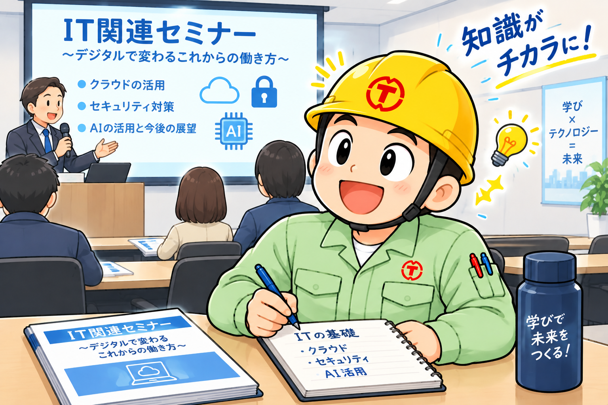

デジタルで、もっと前へ。
デジタルで、私たちの「はたらく」をもっと自由に。
DX推進 - 社内報 Vol. 9 | 2026.11.2
デジタルで、私たちの「はたらく」をもっと自由に。
「リカレント教育」や「リスキリング」、ニュースや研修の案内でよく目にする言葉です。
そして、こうした言葉を聞くたびにこんな声も聞こえてきます。
「今までそんなこと必要なかったのに！」
「なんで通常業務以外にそんなことしなくちゃいけないの？」
今回はこの2つの声に正面から向き合ってみます。結論を先に言うと、どちらの声も「もっとも」です。そのうえで、なぜ今「学び直し」が話題になっているのかを、一緒に考えてみたいと思います。
似たような言葉ですが、少しずつ意味が違います。
ざっくり言えば、どちらも「学び直し」です。この社内報で特にお伝えしたいのは、後者の「リスキリング」、つまり仕事のための学び直しのほうです。
まず、この声は間違っていません。これまでは、入社して先輩から仕事を教わり、経験を積めば定年まで十分に通用しました。道具や仕事のやり方が変わるのは、10年、20年に一度。変わったとしても、先輩に聞けばだいたい答えが返ってきました。
変わったのは私たちではなく、変化のスピードのほうです。
「先輩に聞く」という、これまでいちばん確実だった学び方が通用しにくくなっています。先輩も、まだ誰も知らないことが増えているからです。
ただ、「学び直し」は、私たちにとってまったく新しいことではありません。思い出してみてください。
これらはすべて、立派な「リスキリング」です。新しい機械を入れたのに操作を覚えない、という人はいません。それは「仕事の一部」だったからです。
デジタルの道具も、まったく同じです。違いがあるとすれば、目に見える機械ではないので、「新しい機械が入った」と気づきにくいことくらいです。
「わからないから/詳しくないから誰かに任せておけばいい」「自分には関係のないこと、誰かが勝手にやってくれる」・・・ITやデジタルの分野だけ、この言葉がまかり通るのはおかしくないですか。従来の業務で、同僚がこんなことを言ったらどう思いますか。どう評価しますか。
2つ目の声、「なんで通常業務以外にそんなことしなくちゃいけないの？」。これも、もっともな声です。毎日の仕事だけでも手いっぱいで、そのうえ勉強まで、と思うのは当然です。
DX推進チームとしての考えを、正直にお伝えします。
仕事に必要な学びは、本来「通常業務の一部」であるべきだと考えています。機械の操作講習や資格取得を業務として受けてきたのと同じように、デジタルの学びも、業務時間の中で取り組めるようにしていくべきです。「個人の努力で、時間外にやってください」という形にはしたくありません。そのための仕組みづくりは、DX推進チームとしても会社に働きかけていきます。
ちなみに国も、企業が社員の学び直しに取り組むことを後押ししています。厚生労働省の「人材開発支援助成金」には、新しい分野のスキル習得を支援する「事業展開等リスキリング支援コース」が用意されています。
→ 人材開発支援助成金 / 厚生労働省学び直しは、もはや「意識の高い人が自主的にやるもの」ではなく、会社として取り組むものになりつつあります。
こんな話があります。木こりが、切れ味の落ちた斧で一生懸命に木を切っていました。通りがかった人が「斧を研いだらどうですか」と声をかけると、木こりはこう答えました。「忙しくて、研いでいる暇なんてないんだ」。
現場の皆さんなら、この話のおかしさがすぐに分かると思います。切れなくなった刃物やドリルで作業を続けるより、交換したり研いだりしたほうが、結局は早くてきれいに仕上がります。
デジタルの学びも、同じです。
学ぶ時間は、通常業務を増やすためのものではなく、減らすためのものです。「忙しいから学べない」のではなく、「学んでいないから忙しい」のかもしれません。

（この画像はChatGPTで作成しました）
「学び直し」と聞くと、机に向かって分厚い本を読んだり、資格試験を受けたりする姿を想像するかもしれません。でも、最初の一歩はもっと小さくて大丈夫です。
もう少し体系的に学んでみたい方には、経済産業省とIPAが運営する「マナビDX」がおすすめです。デジタルの基礎からさまざまな講座が紹介されていて、無料のものも数多くあります。
→ マナビDX（デジタル人材育成プラットフォーム） / 経済産業省・IPAVol.6の「知っているだけでは、変わらない。」でお伝えしたとおり、大切なのは知識を増やすことよりも、ひとつでも実際に使ってみることです。
「社訓のご唱和」やめませんか？
・・・と書くと、叩かれそうで怖いのですが、「社訓」も「ご唱和」も不要だと言っているのではありません。社訓は「そうであってほしい」という希望や「意識改革」が込められたものではないでしょうか。「ご唱和」はそれを忘れないようにするためはじめられたのではないでしょうか。
言い出しっぺも「週一回の発声練習の場」にしようとは考えていなかったはずです。
慣習としてただの発声練習になっているのであればやめませんか。
「今まで必要なかったのに」という気持ちは、筆者自身もよく分かります。新しいことを覚えるのは、正直なところ面倒です。それでも、新しい機械が入ったときのように「使えるようになったら、仕事がちょっと楽になった」という経験を、デジタルの世界でも皆さんと一緒に増やしていけたらと思っています。
DX推進チーム発足に向けて協力していただける方を募集中です。
「こんなことを学んでみたい」「これを教えてほしい」「自分はこれなら教えられる」といった声も大歓迎です。ぜひ教えてください。

（この画像はChatGPTで作成しました）